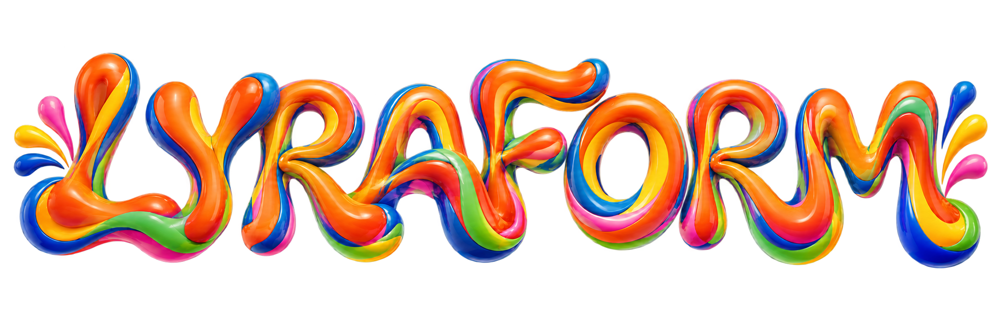

Запуск нового продукта
Нужно объяснить ценность, собрать структуру сайта и создать узнаваемый визуальный образ.
Помогаем запустить новый продукт или обновить существующий: разбираемся в задаче, проектируем структуру и создаём цельную визуальную систему.
Основной продукт — дизайн. Разработку сайта подключаем отдельным этапом по запросу.

На выходе: структура, прототип, адаптивный дизайн и набор компонентов для разработки. Подходит для запуска продукта, услуги или обновления корпоративного сайта.
02На выходе: визуальная концепция, логотип, цветовая и типографическая система, основные носители и правила использования.
03На выходе: идея кампании и комплект материалов для баннеров, социальных сетей, рассылок и других рекламных форматов.
Нужно объяснить ценность, собрать структуру сайта и создать узнаваемый визуальный образ.
Сайт или айдентика устарели, выглядят разрозненно и больше не соответствуют бизнесу.
Нужна сильная идея и единая система материалов для разных каналов и форматов.
Проекты выше — авторские концепции LYRAFORM. Они показывают подход и визуальный диапазон команды, а не сотрудничество с реальными компаниями.
Изучаем продукт, аудиторию и то, что действительно нужно изменить.
Собираем структуру, референсы и одну ясную визуальную идею.
Разворачиваем идею в макеты, компоненты и все нужные форматы.
Готовим материалы для команды клиента. Разработку подключаем отдельно.
LYRAFORM — независимая распределённая команда дизайнеров. Ведём проекты от брифа и структуры до готовой системы макетов. Клиент общается напрямую со специалистом, который отвечает за результат.
До старта фиксируем этапы, результат каждого этапа и точки согласования.
Передаём адаптивные макеты, компоненты, исходники и правила использования системы.
При необходимости подключаем разработчика отдельным этапом и доводим сайт до публикации.
Идея, визуальный язык и целостность проекта.
Структура, интерфейсы и адаптивные макеты.
Айдентика, кампании и система носителей.
Подключается отдельно, когда проекту нужен запуск под ключ.
Сначала уточняем задачу и объём, затем предлагаем состав работ и смету. На сайте намеренно нет универсального прайса: лендинг, айдентика и длительная поддержка требуют разного состава команды.
Основной продукт LYRAFORM — дизайн. Разработку можно подключить как отдельный этап, если это требуется проекту.
Да. Нередко начинаем с лендинга, рекламной кампании или обновления одного ключевого экрана, а затем расширяем систему.
Фиксируем договорённости письменно, показываем промежуточные решения и заранее обозначаем точки согласования.
Достаточно нескольких предложений. Уточним задачу и предложим подходящий состав работ.